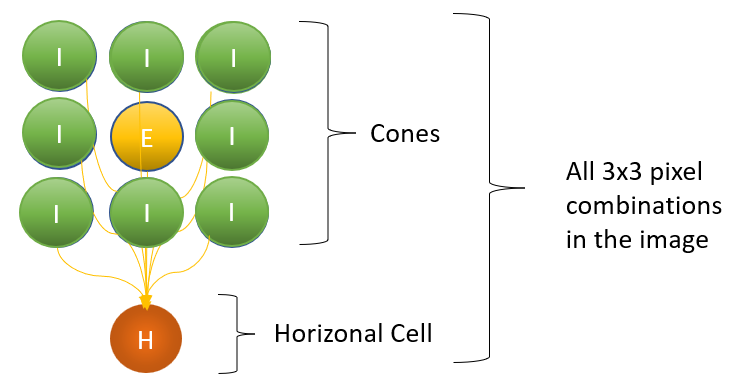
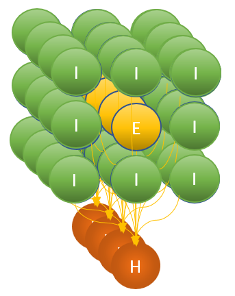
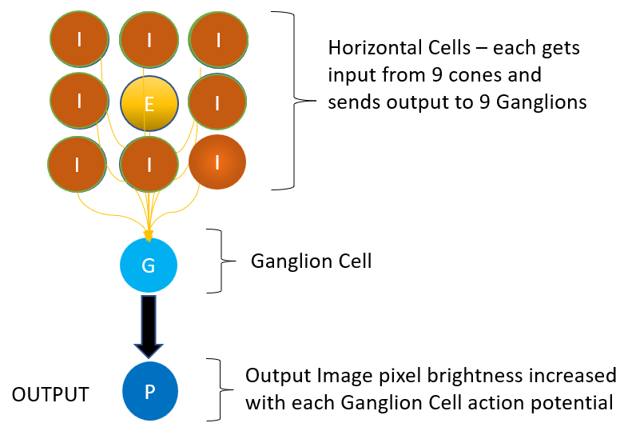

There is ongoing debate about what the fundamental mechanism of computation by excitable cells is. To use analogy, think of the computer you are reading this on. It's likely a digital computer that does logical operations on sequences of bits. Because we invented them, we know for sure that this is achieved by transistors implementing logic gates to manipulate bits. So the information encoded as series of bits (i.e. 00110010) and is processed through a small set of logical operations that transistors can do. How the brain encodes and processes information is still a mystery.
Vision is a good place to start, because we can use an objectively measurable input (an image) and objectively measure the output. The reason to use computational simulation is that it may produce surprising results. Traditional mathematical modelling can accurately describe relationships between inputs and outputs, but this doesn't mean that the cells are doing the math as described in these models. if they are doing math, what sort is it and how do they achieve it?
There appears to be replication of a basic architecture throughout the cortex. The classic example is the cortical column consisting of 6 layers of interconnected neurons.
Throughout the visual system, from the retina through to occipital, temporal and parietal cortex there is a repeating pattern of what are known as 'receptive fields'. These are cortical representations of space with some feature in the center being contrasted with the surround. They can represent various sizes in terms of visual angle (i.e. how big a bit of retina it maps to). They also represent various differences between center and surround (i.e. simple differences in brightness/colour, orientations of lines, motion vectors etc)
Neurons (and other excitable cells) can do at least two things to convey information to the cells they are connected to:
Neurons are said to 'fire' (or spike) when they have an action potential. This is a sudden rapid change in the electical polarity of the cell that triggers release of substances that influence neighbouring cells. Some of these are called 'neurotransmitters'.
Cells have internal mechanisms regulating their firing rate which can vary between cell types. The firing rate has an upper limit determined by the cells refractory period. Some cells fire at predictable regular intervals (pacemaker cells), but for many the firing rate is erratic and best described by probabilities.
There are hundreds of different neurtransmitters, co-transmitters and neuromodulators. Many of these bind to multiple recepetors each having unique effects on their cell. The absurd complexity doesn't end there, and the more I study it the more terrifying it gets.
Thankfully, this complexity can be reduced to a simple rule; All communications from a cell (the efferent) lead to either inhibition or excitation of the receiving cell (the afferent). This changes the likelihood of the receiving cell firing. It can be mediatiated by all sorts of mechanisms, but the end result is the same - the cell will either be primed to be more likely to fire if it receives excitation, or made less likely to fire if it receives inhibition. The effect can happen over a range of time scales, last for varying durations and occur between cells of varying physical distance from each other.
The cells in the retina are not confined to simple photoreceptors, there are numerous layers of different cell types, all doing lots of information processing. The signals that go down the optic nerve have already been extensively processed. The retina can be thought of as a part of the brain, just out on stalks looking at the world.
The visual system comprises the retina, some sub-cortical areas and a very large part of the cortex. It's most of the back half of the brain, plus some bits in the middle and front. By the time an image materialises into conscious perception it has been extensively manipulated by all these cells. We see a rendition rather than reality.
To keep things as simple as reasonably possible I have included only 3 layers of cells. These are loosely based on their physiologic name-sakes and include:
These are the photoreceptors that recieve information from the input image
These aggregate the responses of the cones into center-surround receptive fields.
These aggregate responses of Horizontal cells into center-surround receptive fields. Their resultant firing rate forms the output of the simulation.
Images are two dimmensional arrays (x pixels wide and y pixels high) of pixels that have varying colour. In this model there is one cone, one horizontal and one ganglion cell for every pixel in the image. There are, however, many connections between these cells. All possible sets of 9 adjacent cones ( 3 x 3 grids ) are connected to each horizontal cell and all possible sets of 9 adjacent horizontal cells are connected to each ganglion cell. As a result, for an image of 200 x 200 pixels there will be 120,000 virtual neurons and 720,000 synapses.
Schematic of single receptive field made up of cones:
E stands for excitatory - these cells send excitatory signals to the cells they are connected to. I stands for Inhibitory

Schematic of multiple receptive fields (only one dimension displayed for simplicity):

This architecture is repeated for horizontal cells

Cells have a difference in electrical potential - measured in mV - across the cell membrane (between the intracellular and extracellular space). This can change either up or down. If the potential reaches a 'critical' potential the cell will 'fire' and then immediately return it's potential to a 'resting' potential. When a cell fires it changes the potential of the cells it is connected to in either a positive or negative direction (inhibition or excitation).
Each cell is an independant object. They maintain their current status ( membrane potential and internal timer ) and their individual properties in isolation. They are created individually and begin firing autonomously. The timining of each cell creation is not tightly controlled and hence has a degree of randomness. This results asynchronous firing of cells even if they are created with the same properties. e.g. adjacent cones stimulated by pixels of the same brightness are unlikely to fire at the same time.
Cones have a fast basal firing rate and are inhibited by the level of brightness of the light hitting them (i.e. the brightness of the corresponding pixel in the input image). In other words, cones that are stimulated by a bright pixel will fire at a slower rate than one's stimulated by a dark pixel.
This sounds backwards - but I found, accidently, that it is required. When documenting my working code, I saw that I had a minus where there should have been a plus, so I reveresed it and the simulation no longer produced sensible output. I went back to the physiology textbooks and found that this is indeed the behaviour of real cones!
Each cone spontaneously excites itself by a small amount at a rate determined by the brightness of its pixel. This is in milliseconds, a pixel with a bightness of 200, will result in the cell raising it's membrance potential every 200ms. When this excitation reaches the critical threshold, it will fire and send a packet of inhibition or excitation to the horizontal cells it is connected to. This results in cones stimulated by bright pixels firing at slower rates than those responding to dark pixels.
The degree of excitation sent by the cone (e) to the horizontal cell in the center of the receptive field is determined by the brightness of it's pixel. The brighter the pixel the larger the excitation. The relationship is linear in a direct mapping of the pixel brightness (range: 0 = black - 255 = white).
The inhibitory signal sent by a cone (i) to the horizontal cells in the surround section of the receptive field is: -e/8.
Horizontal cells do not spontaneously polarise themselves. They do not run an internal timer. They receive packets of inhibition and excitation from cones. If and when the received packets sum above the critical threshold the cell will fire and send packets upstream to the gangion cells. The cell then resets it's potential back to the resting potential.
They polarise their respective ganglion cells by +1 mV for excitation and -8 mV for inhibition.
The output image is determined by the sum of the number of times each ganglion cell has fired. The pixel in the ouput image corresponding to the location of the ganglion cell is made brighter each time it fires. The ouput image evolves as the simulation runs with pixels becoming progressively brighter with every spike of a ganglion cell.
Therefore, the output image is a representation of the firing rate of ganglion cells accross both space and time.
Ganglion cells spontaneously depolarise themselves by an amount on the tick of an internal timer. This has the effect of reducing noise and hence increasing the signal to noise ratio (SNR).
Ganglion cells are self regulating. They have 3 mechanisms for this:
Each of these is non-linear, in that they are doubled or halved at each change.
The effects balance each other out and result in retention of all 'information' (in this example, the information refers to local changes in brightness of pixels) in the image.
This results in edges of any contrast gradient being detected. The 'strength' of the signal - corresponding to the degree of intensity gradient - is encoded in the temporal dynamics of the ganglion cell.
Strong edges will immerge quickly with a rapid initial burst of ganglion cell spiking. These will downregulate proportionately relative to the intensity of initial firing.
As this is happening, less intensly stimulated ganglion cells will become increasing primed and hence their firing rate will begin to increase.
The result is that distinct edges will emerge first, but over time increasingly less distinct edges will emerge.
It is important to note, that this is not the end of information processing in the visual cortex, rather these signals are being sent upstream in real time. So the effect on vision is that bold edges are detected fast and passed upstream before subtle edges. This is why if you glance very briefly at something, you will only detect the bold edges. To see subtle edges you have to stare for a bit.
The classic Lena image - the video starts with the end result - to see it evolve, hit play
An image with a large range of contrast gradients
The firing rate of ganglion cells can be seen as encoding edges along with their relative strengths. It does not saturate with prolonged runs of the simulation. By that I mean, edges defined by low contrast gradients never end up depicted as bright as high intensity gradients. This can be seen by the difference between the shirt stripes and the clouds in the above image. The strips are the first to appear, whilst the distant water and clouds are emerging, subtle edges in the stripes are becoming apparent.
This is mediated by independant adaptation of each ganglion cell. The result of this adaptation is that no assumptions or prior knowledge is needed to find all edges in any image. It will work independant on the properties of the input image - without needing tweeking.
We can see that excitation is built up by summing the inputs from cells in the previous layers. There is a small component of random noise in the outputs of the simulation and no two runs are identical. This is because each cell is running an independant timer with it's own duration. Even when adjacent cells have timers with the same duration, they are unlikely to have been initiated at exactly the same time. When cells are aggregating inputs from the previous layer, there is a chance that sufficient excitatory signals will be received to trigger a spike before sufficient inhibition has been received. This results in a small amount of noise in the output - visible by feint random dots.
There is a dependency on a temporal correlation between incoming signals from the proceeding cell layer. They don't need to be simulataneous, but the strength of the resultant summation is determined by how close they are together in time. i.e. the degree of synchronicity. This is because the cells are rebalancing themselves back to the resting potential (and adapting their propensity to spike) after each spike.
This has implications for signal detection. If the visual system is aggregating information in this fashion then it would follow that a large number of synchronous low intensity signals will produce the same effect as a small number of synchronous high intensity signals. This was the basic idea behind the experiments in our 2003 paper: Bull NJ, Hunter M, Finlay DC. Cue gradient and cue density interact in the detection and recognition of objects defined by motion, contrast, or texture. Perception. 2003;32(1):29-39.
In that paper we demonstrated that this simple rule applies irrespective of whether the information in question is a difference in brightness, velocity or shapes.